Jacobus, 58 — DGA
Eigenaar familiebedrijf, eigen woning €850.000, spaargeld €280.000, BV €120.000, pensioenpot €145.000. Bedrijfsopvolging in 2033.
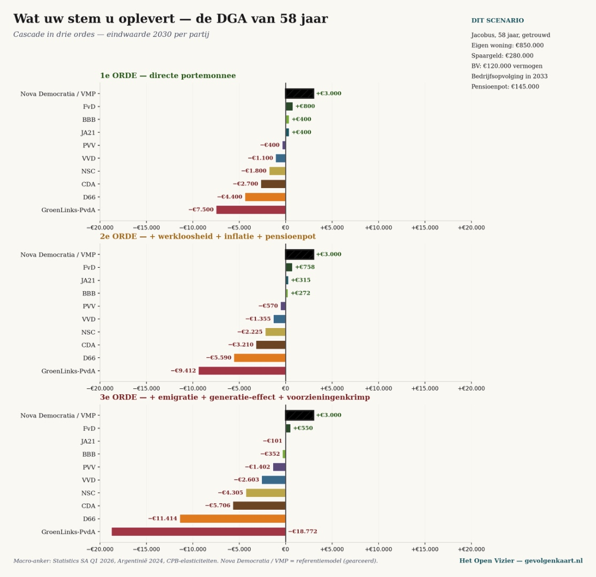
Open op volledig formaat →Een krant over denken zonder oogkleppen
Voor wie op PRO, GroenLinks-PvdA of D66 stemt — twintig posities, één matrix
Jacobus van Merksteijn · Malta, juni 2026
Twintig persoons- en bedrijfsprofielen × tien Nederlandse partijen. Cijfers geven het 3e-orde effect (% van inkomen voor burgers, % omzet voor bedrijven) in 2030 — directe portemonnee plus werkloosheid, inflatie, pensioenpot-erosie, emigratie, generatie-effect en voorzieningenkrimp. Bronnen: CBS koopkracht, Statistics South Africa Q1 2026, Argentinië 2024, CPB-elasticiteiten.
Hieronder voor negen persoonsprofielen de cascade in drie ordes — wat er gebeurt met uw portemonnee, en wat er gebeurt als de gevolgen doorrekenen tot 2030. Klik op een grafiek voor volledig formaat.
Eigenaar familiebedrijf, eigen woning €850.000, spaargeld €280.000, BV €120.000, pensioenpot €145.000. Bedrijfsopvolging in 2033.

Open op volledig formaat →Familiebedrijf, 95 koeien, EUR-kwaliteit. Eigen land en stal, opvolger in opleiding.
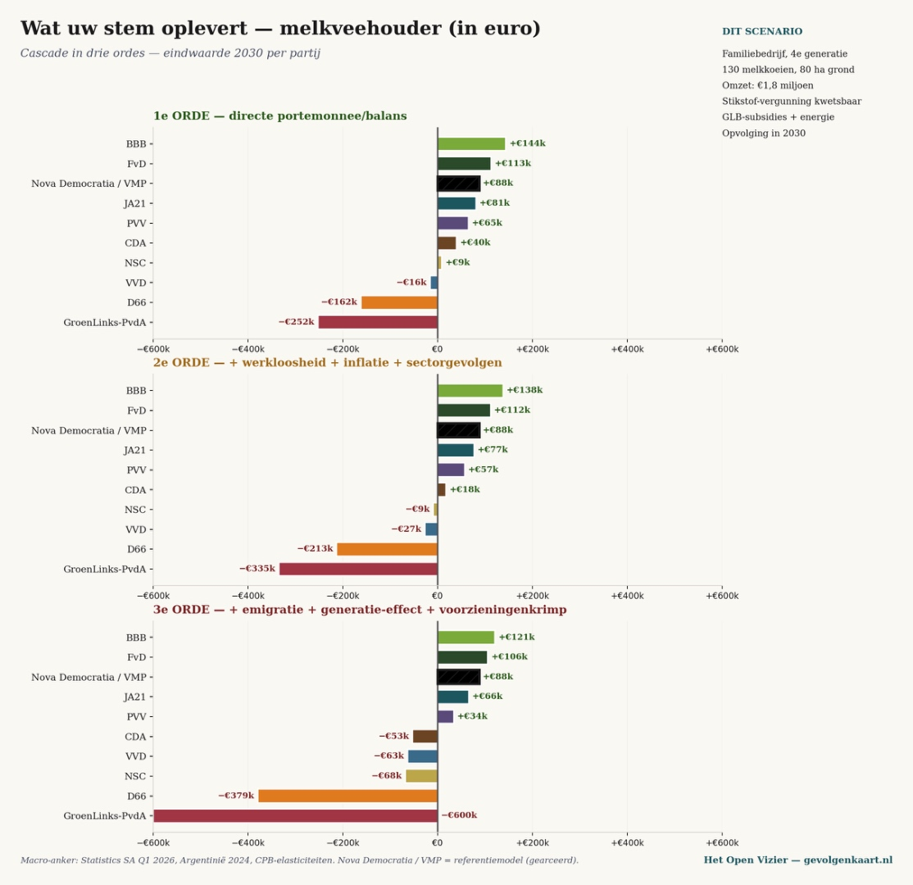
Open op volledig formaat →Vijf jaar in Nederland via 30%-regeling, twee kinderen, internationaal mobiel, partner werkt in tech.
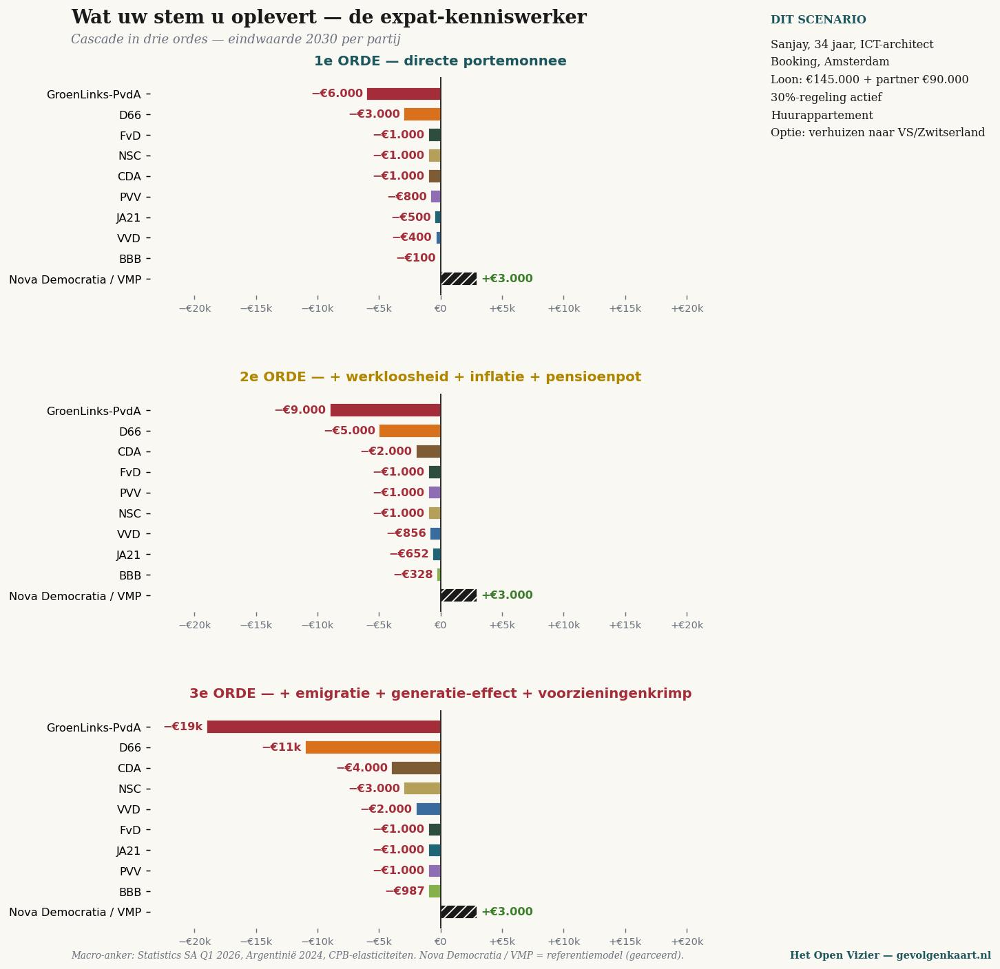
Open op volledig formaat →Beide ICT/finance, gezamenlijk inkomen €250.000, eigen woning €650.000, beleggingsportefeuille €420.000.
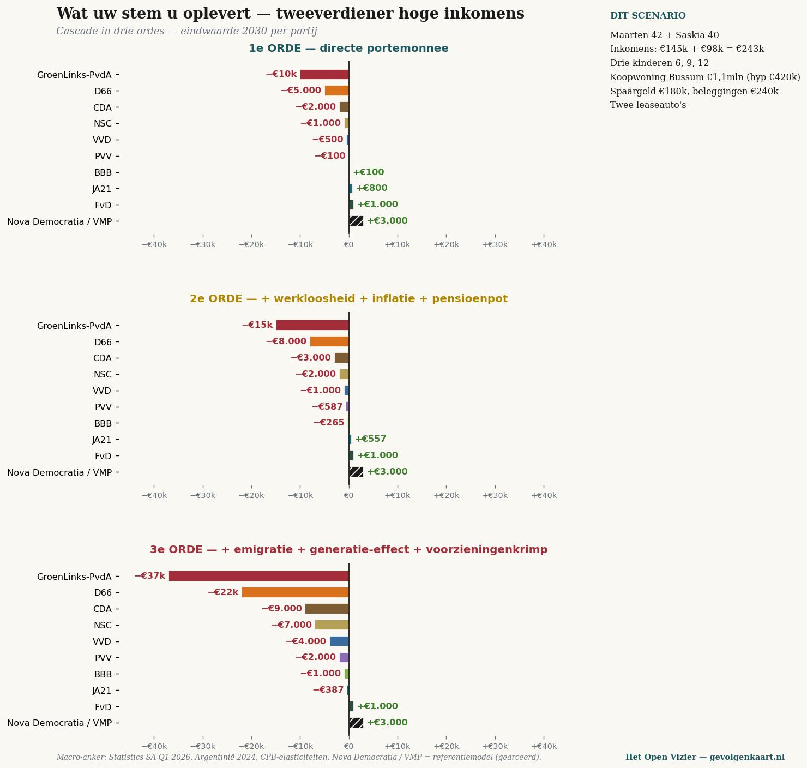
Open op volledig formaat →Modaal alleen-verdiener, partner thuis met drie kinderen, eigen woning €420.000, pensioenpot €78.000.
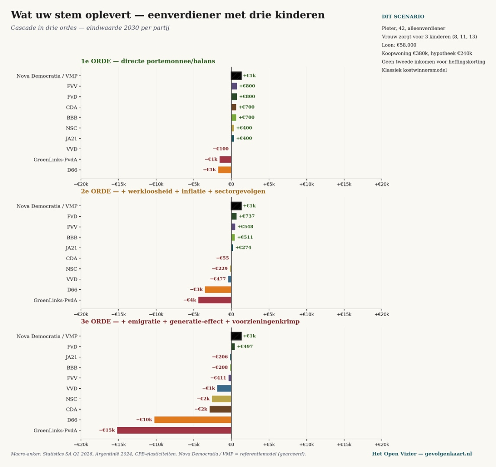
Open op volledig formaat →Twee inkomens samen modaal, twee jonge kinderen, koopwoning €380.000, vakantiehuis grootouders.
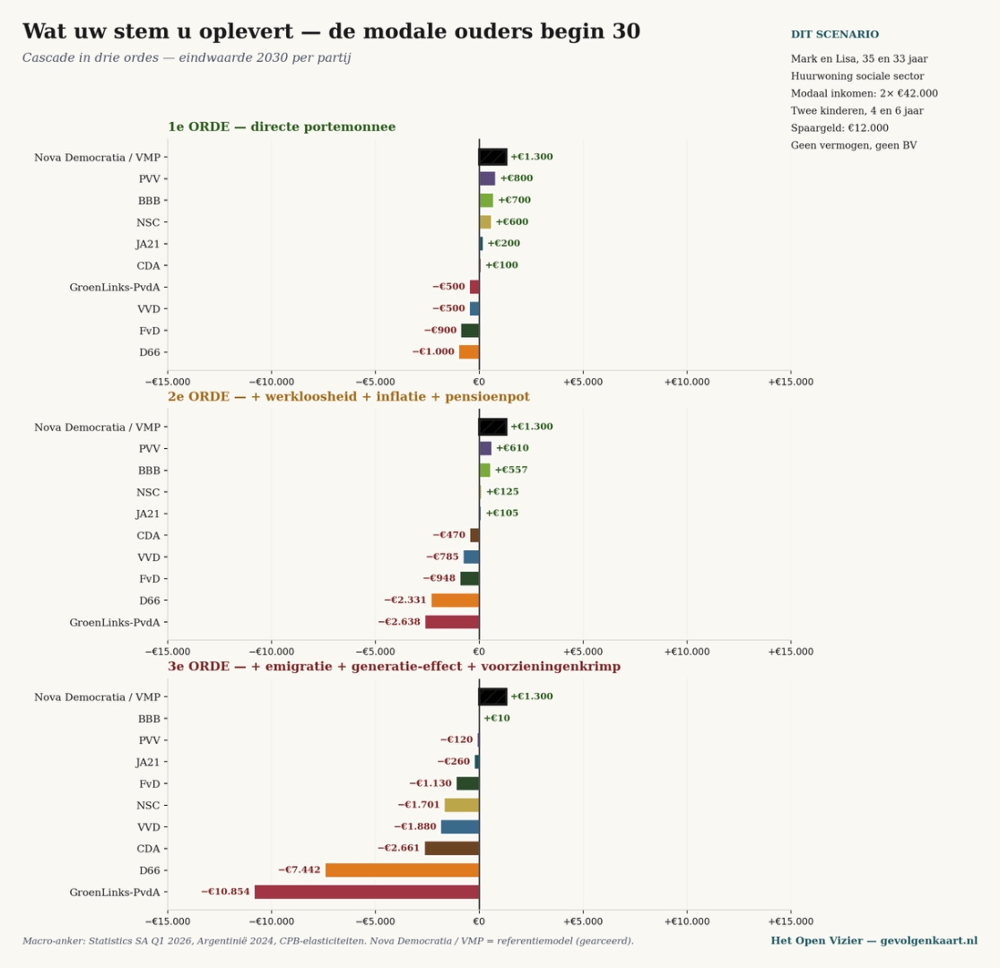
Open op volledig formaat →AOW + bedrijfspensioen €38.000, eigen huis afbetaald (€420.000), spaargeld €95.000. Weduwe, kinderen uit huis.
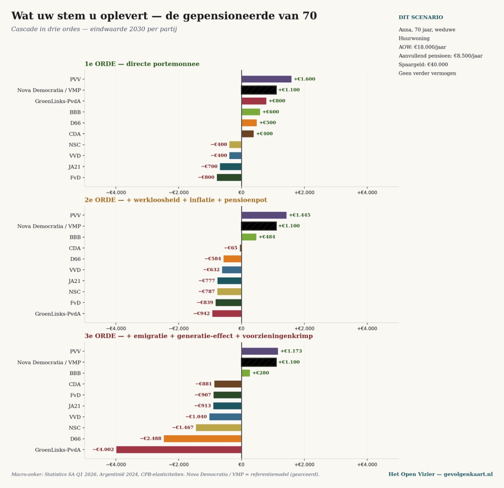
Open op volledig formaat →Multiple sclerose, gedeeltelijke WIA (€18.500 + WW-aanvulling), partner werkt, huurt sociaal.
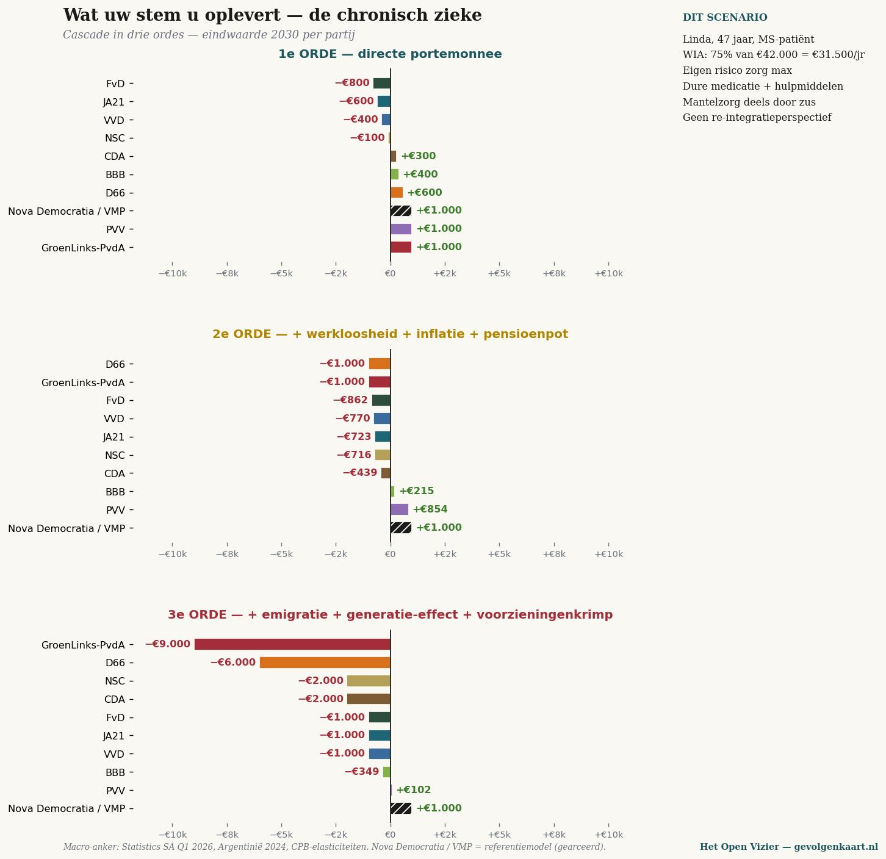
Open op volledig formaat →Volledige Wlz-zorg, eigen bijdrage, pensioenuitkering volledig naar zorg. Profiel: kostbaar in 3e-orde scenario.
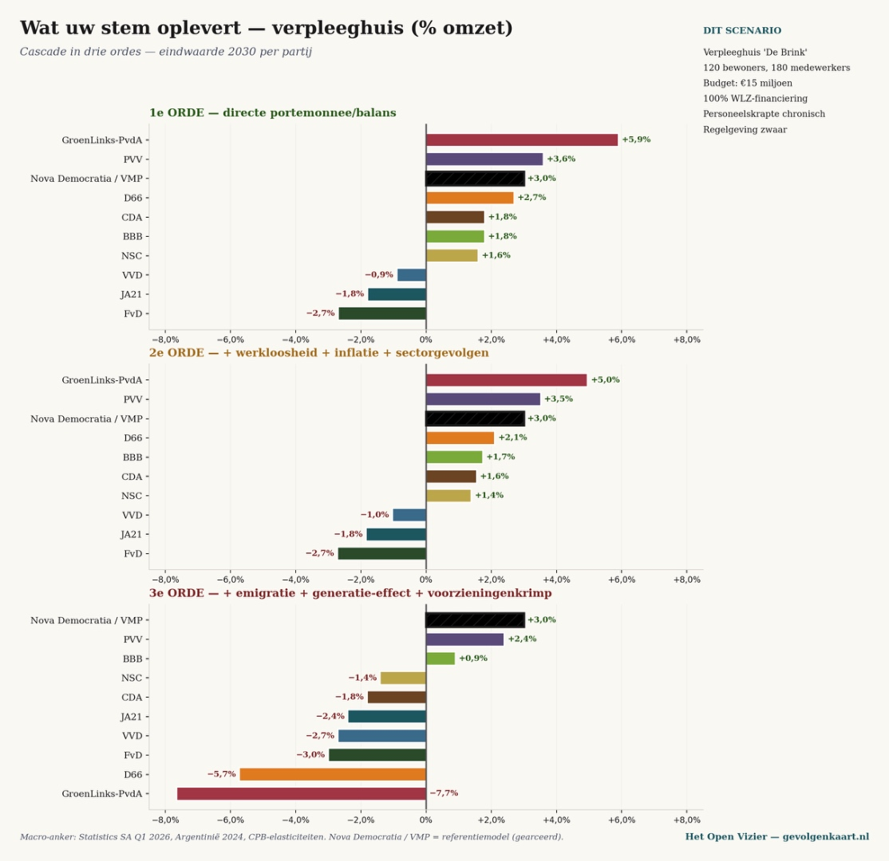
Open op volledig formaat →Drie profielen — DGA, gepensioneerde, modale ouders — uitgewerkt in vier zones: Plunderaars, Meelopers, Wijzenden, Verdedigers. Hoe verder van het blauwe vlak (€0), hoe verder weg uw stem u brengt van waar u nu staat.
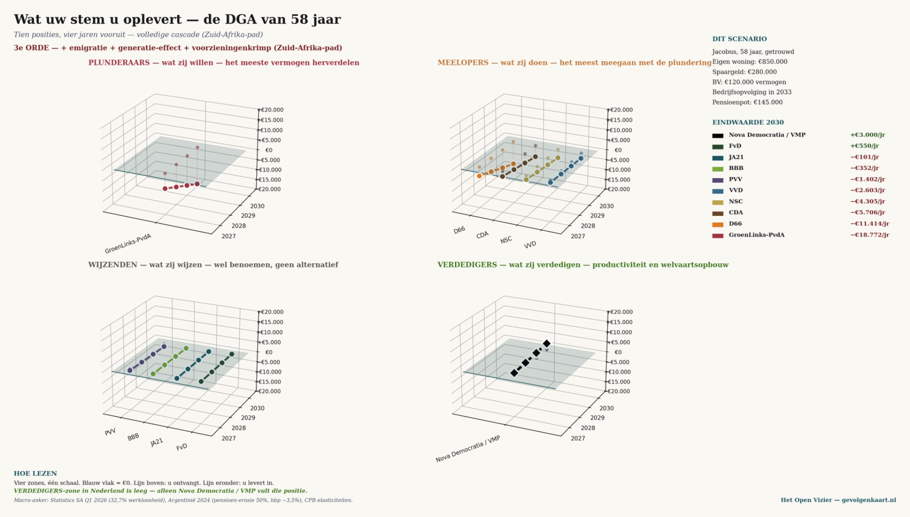
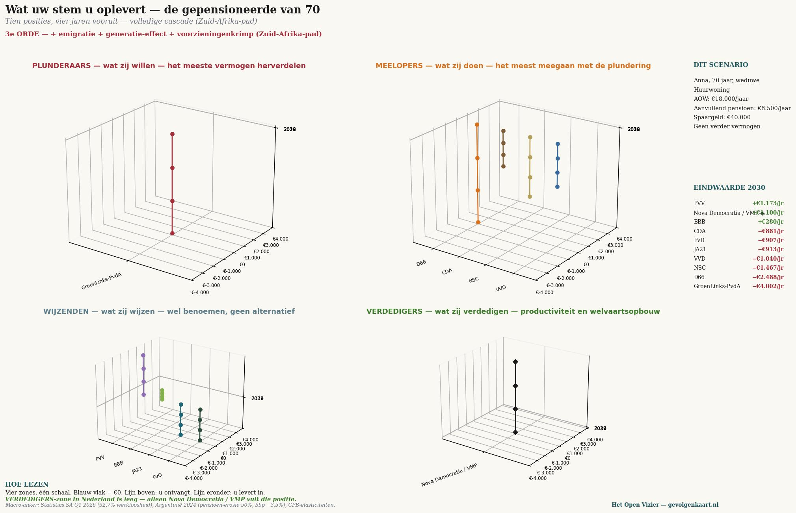
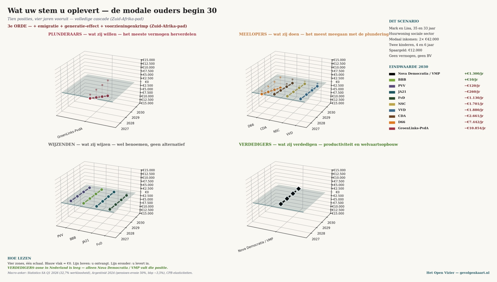
Tot zover de cijfers. Vanaf hier de analyse: drie overtuigingen, getoetst aan diezelfde cijfers.
Dit stuk is geen aanval. Geen oproep. Geen poging u over te halen.
Dit stuk is een tabel met cijfers, gevolgd door wat die cijfers betekenen.
Wat u ermee doet, is uw zaak. Wij vragen alleen één ding: lees ze tot het einde.
Wie op PRO, GroenLinks-PvdA of D66 stemt, doet dat vanuit een morele zelfopvatting. Dat is niet cynisch bedoeld — het is een eerlijke waarneming. De linkse kiezer ziet zichzelf niet als egoïst maar als deelnemer aan een groter goed.
Drie overtuigingen dragen die zelfopvatting:
Ten eerste: de rijken moeten verarmd worden, want hun rijkdom is óf onverdiend, óf ontstaan ten koste van anderen. Herverdeling is rechtvaardig.
Ten tweede: mijn baan en mijn inkomen zijn veiliger bij links. Rechtse partijen schrappen banen, snijden in lonen, en geven werkgevers vrij spel.
Ten derde: de vakbond beschermt mij, en de partij die de vakbond steunt, beschermt mij. Collectieve onderhandeling is mijn vangnet.
Deze drie overtuigingen worden in dit stuk niet bestreden met argumenten. Ze worden getoetst aan cijfers — drie hoofdstukken, zes scenario\'s, één conclusie. De getallen komen uit doorrekeningen op basis van CBS-koopkrachtreeksen, Statistics South Africa, Argentijnse pensioendata, en de elasticiteiten van het CPB.
Drie ordes worden steeds doorgerekend. De eerste orde is wat een partij direct doet met uw portemonnee: belastingen, toeslagen, AOW. De tweede orde voegt de gevolgen toe die voortvloeien uit dat beleid: werkloosheid, inflatie, pensioenpot-erosie. De derde orde rekent de volledige cascade door: emigratie van vermogenden, generatie-effect, krimp van voorzieningen — het pad dat Zuid-Afrika de afgelopen vijftien jaar heeft afgelegd.
Een laatste opmerking vooraf. PRO is de progressieve fusie waarbinnen GroenLinks-PvdA in 2025 opging. In de doorrekening worden zij behandeld als één continuüm, want het programma is in essentie hetzelfde.
\"Als de rijken een beetje minder hebben, hebben wij een beetje meer.\"
— de impliciete redenering
De gedachte is intuïtief en moreel: vermogen dat ophoopt aan de top mag terugvloeien naar wie minder heeft. Een vermogensbelasting van 2 procent, een hogere box 2, een miljonairsheffing — het lijkt rechtvaardig en het lijkt pijnloos voor wie zelf geen miljoenen heeft. Twee scenario\'s tonen wat er daadwerkelijk gebeurt.
Jacobus, 58, DGA — wat met hem gebeurt
Jacobus runt een familiebedrijf in Twente. Vijftien werknemers, een omzet van vier ton, een eigen woning, een BV met €120.000 vermogen, een pensioenpot van €145.000, en spaargeld dat hij door dertig jaar werken bij elkaar heeft gewerkt. Bedrijfsopvolging staat gepland voor 2033. Hij is — voor PRO/GL-PvdA-begrippen — een rijke. Voor zijn buren een doorsnee ondernemer.
{width="6.5in" height="6.296372484689414in"}
Cascade voor de DGA — drie ordes, eindwaarde 2030 per partij. Onder PRO/GroenLinks-PvdA loopt het verlies op van €7.500 (directe heffing) via €9.412 (inclusief werkloosheidseffect) tot €18.772 per jaar wanneer de volledige cascade telt. D66 volgt op afstand met −€11.414 per jaar.
De eerste orde is wat in het verkiezingsprogramma staat: vermogensbelasting plus box 2 plus miljonairsheffing kosten Jacobus ongeveer €7.500 per jaar in 2030. Een bedrag dat voor hem voelbaar is maar te dragen.
Daarna begint de cascade. Zijn klanten worden armer — zij geven minder uit, zijn omzet daalt. Zijn werknemers worden duurder doordat de werkloosheidsdrukte loonkosten opjaagt. Zijn pensioenpot rendeert minder doordat kapitaal het land verlaat en beurskoersen wegzakken. Tweede orde: −€9.412.
In de derde orde verliest zijn BV waarde — niet door directe heffing, maar omdat de bedrijfsopvolgingsregeling onder druk staat en hoogopgeleide werknemers naar Zwitserland, Duitsland of de Verenigde Staten vertrekken. Het opvolgingsplan voor 2033 wordt onzeker. Drie van zijn vijftien werknemers verliezen hun baan in de loop van vier jaar. Jacobus zelf raakt €18.772 per jaar kwijt — meer dan twee keer de directe heffing.
Maarten en Saskia, tweeverdieners, samen €243.000
Maarten leidt een team van twaalf bij een Nederlands productiebedrijf. Saskia werkt als hoofd HR bij een internationale dienstverlener. Drie kinderen, koophuis van €1,1 miljoen in Bussum met een hypotheek van €420.000. Spaargeld en beleggingen samen ruim €400.000. Voor de PRO-kiezer: rijk. Voor henzelf: hard werkend, hoog belast, weinig vrije tijd.
{width="6.5in" height="6.154311023622047in"}
Cascade voor de tweeverdiener met hoog inkomen. De directe heffing bij PRO/GL-PvdA: €11.500 per jaar. De volledige cascade: bijna €37.000 per jaar — vijftien procent van het gezamenlijke gezinsinkomen.
In de eerste orde verliezen zij €11.500 per jaar door het toptarief, box 3 en de miljonairsheffing. Dat is fors maar te dragen.
In de derde orde komt daar bovenop: hun beleggingen verdampen, hun hypotheekrente stijgt door kapitaalvlucht, hun kinderen worden geconfronteerd met krimpend privé-onderwijs. En — dit is cruciaal — bij hen is de optie om te emigreren reëel. Maarten kan in Frankfurt of Zürich werken. Saskia ook. Wanneer het verlies de €30.000 per jaar passeert, gaan zij rekenen. En vele duizenden zoals zij ook.
Wat de cijfers zeggen
Wanneer Jacobus en Maarten/Saskia samen €56.000 per jaar minder bijdragen aan de Nederlandse economie, verdwijnt dat geld niet bij hen vandaan en gaat het niet naar de bijstand. Het verdwijnt naar Zwitserland, naar de Verenigde Staten, naar Singapore. Het komt nooit meer terug. De belastingbasis krimpt. De bijstand wordt schraler — niet rijker.
Dat is geen ideologie. Dat is de cijferreeks van Zuid-Afrika tussen 2010 en 2026. Vermogensbelasting werd ingevoerd, kapitaal vluchtte, werkloosheid groeide naar 32,7 procent, jeugdwerkloosheid naar 60,9 procent. De armoede die men met herverdeling wilde bestrijden, werd verdiept.
\"De VVD ontslaat mij. PRO/GL-PvdA beschermt mij.\"
— de impliciete redenering
Het idee is helder: rechtse partijen staan dichter bij werkgevers, en werkgevers willen personeel zo goedkoop mogelijk. Linkse partijen staan dichter bij werknemers, verhogen het minimumloon, beschermen de WW, eisen vaste contracten. Twee scenario\'s tonen wat er gebeurt wanneer u uw baan verliest, en wanneer u als eenverdiener een gezin onderhoudt.
Tom, 45, WW\'er na bedrijfssluiting
Tom werkte achttien jaar bij een metaalverwerkend bedrijf in Doetinchem. Het bedrijf is in 2026 gesloten — de Duitse opdrachtgevers zijn weg, de orderportefeuille is leeg. Tom heeft een WW-uitkering van 70 procent van zijn laatste loon van €52.000. Hij heeft een hypotheek van €280.000 op zijn woning, een kind van twaalf, en €25.000 op de spaarrekening. Hij gelooft dat PRO/GL-PvdA hem zal beschermen.
{width="6.5in" height="6.296372484689414in"}
Cascade voor de WW\'er Tom. Het verschil tussen de eerste orde (+€1.200) en de derde orde (zeer diep negatief) is dramatisch — omdat hij precies in de groep valt die als eerste geen nieuwe baan vindt wanneer de werkloosheid oploopt.
In de eerste orde profiteert Tom: PRO/GL-PvdA verhoogt zijn WW met €1.200 per jaar, verlengt de duur, biedt bijscholing. Dat is feitelijk juist. Op papier is hij beter af.
Maar de tweede orde maakt zijn situatie nijpend. De werkloosheidsdrukte die volgt uit de hogere belastingdruk — kapitaal vlucht, ondernemers investeren niet, klanten kopen minder — maakt het voor Tom moeilijker dan ooit om aan een nieuwe baan te komen. Per cumulatief procentpunt extra werkloosheid kost dat hem gemiddeld vier maanden langer zonder werk. Dat is €6.000 per cumulatief procentpunt.
In de derde orde wordt Tom een statistiek. Na twee jaar WW vervalt zijn uitkering naar bijstand. Zijn hypotheek wordt onbetaalbaar door de gestegen rente. Zijn vakbekwaamheid verouderd door inactiviteit. Hij komt in de categorie \'mismatch\' terecht — werknemers wier kwaliteiten niet meer aansluiten bij de markt. Onder PRO/GL-PvdA verliest Tom op de lange termijn meer dan zijn jaarinkomen.
Pieter, 42, eenverdiener met drie kinderen
Pieter werkt als groepsleider in een industriële bakkerij. €58.000 bruto per jaar. Zijn vrouw Marije zorgt voor hun drie kinderen van acht, elf en dertien. Zij zijn een klassiek kostwinnersgezin — een model dat door alle partijen behalve CDA, BBB en PVV is afgewezen als achterhaald.
{width="6.5in" height="6.127155511811024in"}
Cascade voor de eenverdiener met drie kinderen. Onder PRO/GL-PvdA verliest hij in de derde orde €15.252 per jaar — bijna zesentwintig procent van zijn jaarinkomen. D66 volgt met €10.279 verlies. Bij CDA en BBB houdt hij geld over.
De eerste orde van PRO/GL-PvdA voor Pieter: minus €1.000 per jaar. De algemene heffingskorting voor zijn niet-werkende vrouw wordt verder afgebouwd — een proces dat PRO/GL-PvdA en D66 willen versnellen vanuit \'individualisering\'.
De tweede orde: een gezin van vijf is inflatie-gevoelig. Eten, kleding, sport, vakantie — de €240 per indexpunt aan extra uitgaven snijden direct in het besteedbaar inkomen. Werkloosheidsrisico bij Pieter is bovendien dubbel hard: bij ontslag valt honderd procent van het gezinsinkomen weg, niet zoals bij tweeverdieners de helft.
De derde orde: zijn hypotheek wordt zwaarder door gestegen rentes, zijn pensioenopbouw stagneert, en zijn drie kinderen zijn precies de generatie die de cascade in volle omvang zal opvangen. Voor Pieter: minus €15.252 per jaar — bijna een kwart van zijn brutoloon. Niet via een directe belasting, maar via wat zijn stem in de cascade veroorzaakt.
Wat de cijfers zeggen
De overtuiging dat links de werknemer beschermt, klopt op het niveau van de eerste orde. Het minimumloon gaat omhoog. De WW wordt verlengd. De bijstand wordt royaler.
Maar de tweede en derde orde laten zien wat er met de banen zelf gebeurt. De werkloosheid stijgt door kapitaalvlucht en investeringskrimp. De mensen die hun baan verliezen, vinden geen nieuwe meer. De eenverdiener die nog werk heeft, ziet zijn koopkracht door inflatie wegteren.
Een hogere uitkering bij een uitgeklede arbeidsmarkt is geen bescherming. Het is een afslag op de weg naar bijstand.
\"Samen sterk. De collectieve onderhandeling is mijn vangnet.\"
— de impliciete redenering
Voor wie lid is van FNV, CNV of een sectorale vakbond, voelt het lidmaatschap als verzekering. De vakbond strijdt voor uw cao, uw pensioen, uw arbeidsvoorwaarden. PRO/GL-PvdA en in mindere mate D66 staan aan haar zijde. Twee scenario\'s tonen wat die bescherming feitelijk oplevert in de cascade.
Sandra, 38, alleenstaande moeder in de bijstand
Sandra werkte als verzorgende in de thuiszorg tot ze in 2024 burnout raakte. Ze is sindsdien in de bijstand, met een kind van acht. Haar netto-inkomen — bijstand plus huurtoeslag plus kindgebonden budget plus zorgtoeslag — is ongeveer €21.000 per jaar. Zij vormt het gezicht van wie PRO/GL-PvdA zegt te willen helpen.
{width="6.5in" height="6.296372484689414in"}
Cascade voor Sandra. De omkering is hier het scherpst: in de eerste orde geeft PRO/GL-PvdA haar €1.300 per jaar erbij. In de derde orde verliest zij €7.555 — ruim een derde van haar jaarinkomen. De partij die haar het meest belooft, schaadt haar het ergst.
De eerste orde van PRO/GL-PvdA voor Sandra: plus €1.300 per jaar. Hogere bijstand, ruimer kindgebonden budget, betere zorgtoeslag. Dit is geen leugen — het staat in het programma en wordt waargemaakt zodra de partij in een coalitie zit.
De tweede orde is verwoestend voor wie van vaste lasten leeft. Sandra heeft 90 procent van haar inkomen vastgelegd in huur, energie en boodschappen. Inflatie raakt haar dubbel: haar uitkering stijgt met loonindexatie, haar uitgaven met prijsindexatie. Het verschil is een sluipende verarming die elke maand groter wordt. Bovendien wordt uitstroom uit de bijstand naar werk feitelijk onmogelijk: de werkgelegenheid waarin zij ooit zou kunnen terugkeren, krimpt.
De derde orde voltooit de cyclus. Zorg wordt krap, eigen risico stijgt, hulpmiddelen vragen eigen bijdrage. Onderwijs voor haar kind wordt schraler — minder bijles, minder begeleiding. De voedselbank wordt onvermijdelijk. Sandra verliest in de cascade €7.555 per jaar — meer dan een derde van haar inkomen. Onder GL-PvdA. De partij die haar steunt.
Linda, 47, chronisch ziek (MS)
Linda werkte twintig jaar als logistiek planner. Multiple sclerose dwong haar in 2022 stoppen. WIA-uitkering: 75 procent van haar laatste loon van €42.000 = €31.500 per jaar. Eigen risico zorg jaarlijks vol op, dure ziektewerende medicatie, hulpmiddelen, mantelzorg door haar zus. Linda is wie geen enkele partij zou durven laten vallen. Toch laat de cascade zien wat er feitelijk gebeurt.
{width="6.5in" height="6.296372484689414in"}
Cascade voor Linda, MS-patiënt. PRO/GL-PvdA biedt haar in de eerste orde €1.400 erbij. In de derde orde verliest zij €9.842 per jaar — ruim 31 procent van haar uitkering. Dit is geen abstractie, dit is wachten op een rolstoel die niet komt.
Eerste orde voor Linda onder PRO/GL-PvdA: plus €1.400 per jaar. Uitkering omhoog, eigen risico omlaag, gratis fysiotherapie hersteld. Een partij die haar serieus neemt.
Tweede orde: inflatie tikt aan op haar vaste uitgaven én op de zorgkosten die niet vergoed worden. Medicatie wordt duurder, hulpmiddelen worden duurder. Bij werkloosheid in haar omgeving valt mantelzorg deels weg — haar zus krijgt eigen problemen. Het voordeel van €1.400 is in jaar twee al verdwenen.
Derde orde: zorg wordt structureel krapper bij begrotingstekort. Wachtlijsten groeien. Hulpmiddelen gaan langer mee dan goed is. Mantelzorgers zijn er niet meer — zij zijn vertrokken of zelf in nood. Linda verliest €9.842 per jaar. Niet door directe bezuiniging, maar door wat haar stem in beweging heeft gezet.
Wat de cijfers zeggen
De vakbond strijdt voor cao-lonen en pensioenrechten. Dat is waarde. Maar de cao geldt alleen wanneer er werkgelegenheid is. Het pensioen geldt alleen wanneer de pensioenpot rendeert. De uitkering geldt alleen wanneer de belastingbasis intact is.
In de cascade krimpen alle drie. De cao-loonafspraak van morgen is leeg wanneer de industriële basis vandaag wegtrekt. Het pensioen dat de FNV bevocht, is een tiende minder waard wanneer de beurzen door kapitaalvlucht inzakken. De bijstand die PRO/GL-PvdA verhoogt, koopt minder wanneer de inflatie de prijzen dubbel zo hard opjaagt.
Bescherming op de eerste orde is geen bescherming wanneer de tweede en derde orde ondermijnd worden. Het is de illusie van bescherming. En illusies kosten geld — in dit geval meer dan een derde van wat Sandra en Linda binnenkrijgen.
Zes mensen. Drie ordes. Drie overtuigingen.
Jacobus en Maarten/Saskia zouden volgens de eerste overtuiging verarmd moeten worden. In de cascade verarmen zij — maar nemen ze het hele land mee in hun val. Hun €56.000 vermindering aan bijdrage is geen overdracht naar Sandra. Het is een verlies, weggezogen naar elders.
Tom en Pieter zouden volgens de tweede overtuiging beter beschermd zijn bij links. Tom verliest meer dan zijn jaarinkomen door langdurige werkloosheid. Pieter verliest een kwart van zijn salaris door wat zijn collega\'s overkomt en wat zijn vrouw niet meer via heffingskorting kan opvangen.
Sandra en Linda zouden volgens de derde overtuiging het meest gewonnen hebben. Ze verliezen in de cascade een derde van hun inkomen. Niet doordat PRO/GL-PvdA hen beschadigt — die intentie is afwezig — maar doordat het beleid de basis sloopt waarop hun uitkeringen rusten.
De overkoepelende cijfertabel
Voor wie alle cijfers op één plaats wil zien: hieronder de derde-orde-uitkomst per scenario, per partij, in 2030. Twintig levenssituaties, tien posities. De Gevolgenkaart in één matrix.
{width="7.0in" height="5.342049431321085in"}
De Gevolgenkaart — alle twintig scenario\'s tegelijk. Voor burgers: percentage van het jaarinkomen. Voor bedrijven: percentage van de omzet. Lees verticaal om een partij te beoordelen; lees horizontaal om uw situatie te vinden. De kleur is uw stemgevolg.
Een patroon valt op. De linkerkolom — PRO/GL-PvdA — is voor vrijwel elke groep diep rood. De rechterkolom — Nova Democratia/VMP, een meritocratisch referentiemodel — is voor elke groep groen. Niet omdat het ene de andere bevoordeelt, maar omdat het ene model schade aanricht en het andere niet.
De PRO-kiezer wordt geconfronteerd met een paradox: de uitkomst van zijn stem is voor vrijwel elk doel dat hij zegt na te streven, negatief. Voor wie hij wil helpen. Voor het land waar hij in leeft. Voor zijn eigen toekomst.
Wat dit niet is
Dit stuk is geen pleidooi voor een andere partij. Het is geen verkapte campagne. Het is geen verkooppraatje voor Nova Democratia — die staat erin als referentiemodel, niet als alternatief op het stembiljet (want het is er niet).
Wat dit wel is: de poging om drie geloofsovertuigingen tegen drie ordes cijfers te leggen. Zonder schreeuwen. Zonder verwijt. De cijfers staan er. De bronnen worden hieronder benoemd. U bent vrij om ze te verwerpen — maar dan moet u uitleggen waarom de cascade die in Zuid-Afrika is waargenomen, in Argentinië is waargenomen, in elk land dat dit pad is opgegaan, in Nederland niet zal optreden.
Dat is een steekhoudende vraag. Wij denken dat er geen steekhoudend antwoord op is.
De getallen in dit stuk zijn berekend met een driestapsmodel.
De eerste orde komt uit de verkiezingsprogramma\'s van de tien posities, doorvertaald naar de financiële positie van het scenario. Vermogensbelasting, box 2, box 3, AOW-koppeling, toeslagen, BTW — alles uit gepubliceerd materiaal.
De tweede orde combineert vier macro-effecten met de zogenoemde \'druk-index\' per partij. Per indexpunt verandert werkloosheid met 0,018 procentpunt per jaar (gekalibreerd op Argentijnse cijfers 2024: 7,7 procent stijgend naar 8,5 procent in één jaar), inflatie met 0,055 procent bovenop de ECB-doelstelling, pensioenpot-rendement met −0,033 procent. Voor GL-PvdA met druk-index 45 betekent dat: 0,8 procentpunt extra werkloosheid per jaar, 2,5 procent extra inflatie, 1,5 procent lager pensioenrendement.
De derde orde voegt emigratie-effecten toe, generatie-effecten (kinderen-werkloos, ouders-helpen) en voorzieningenkrimp. Emigratie wordt verondersteld op 8.000 hoogverdieners per €10mrd structurele druk per jaar, gekalibreerd op de Zuid-Afrikaanse uitstroom 2010–2026.
De macro-ankers zijn:
Het model is opzettelijk transparant gehouden — geen black-box, geen verborgen aannames. Wie de berekeningen wil reproduceren of betwisten, kan dat. Het open Excel-bestand komt op gevolgenkaart.nl beschikbaar zodra de Gevolgenkaart als platform live gaat.
GESCHREVEN DOOR JACOBUS VAN MERKSTEIJN MET REDACTIONELE AI-ONDERSTEUNING
HET OPEN VIZIER — OPENVIZIER.ORG
DE GEVOLGENKAART — GEVOLGENKAART.NL
JUNI 2026
Vier vragen aan uzelf. Geen partij wordt aanbevolen. Geen antwoord is goed of fout. Wat u ermee doet, is uw zaak.
Welk van de drie overtuigingen herkent u als eigen drijfveer?
Rijken-verarmen / Eigen baan-veiliger / Vakbond-beschermt / geen van drie
Welk persoonsprofiel hierboven lijkt het meest op uw eigen positie?
Kies het profiel dat het dichtst bij u staat — qua leeftijd, inkomen, gezin, beroep.
Welke kolom in de matrix vertegenwoordigt de partij waar u dit jaar op zou stemmen?
Zoek de kolom op, kijk omlaag naar de rij van uw profiel.
Klopt dat cijfer met wat u verwacht had?
Als ja: dan stemt u bewust voor dat resultaat. Als nee: dan is dit het eerste moment waarop u dat zelf vaststelt.
U bent klaar. Wat u nu doet, is van u.

Jacobus van Merksteijn
Malta
Ondernemer, technicus en uitgever van Het Open Vizier. Schrijft over industrie, governance en de fundamenten van een volwassen samenleving.
Meer over de schrijver →